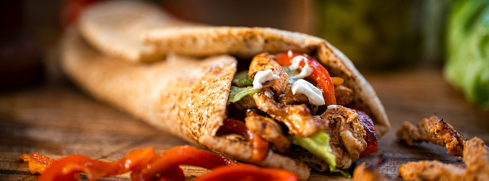
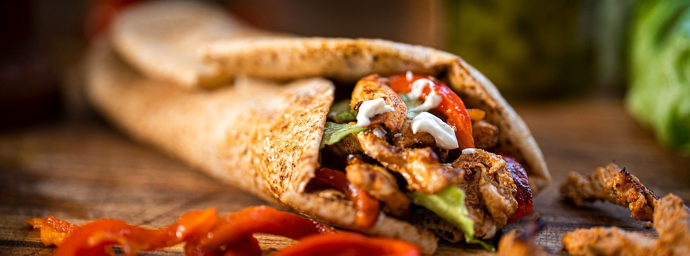

Stats


Sam Collins was born in 1996 in Hong Kong to Stephen and Anita Collins,
before relocating to Jordan at age two where the "made in China" jokes
flowed plentifully from his classmates. He finished his high-school education
in Burlington, North Carolina before attending UNC Wilmington in 2014.
After graduating, he worked in videography and editing until shifting his career
direction to programming, currently studying software engineering at Coding Temple.
His interest in computers can be found in his self-built desktop, or in his
2014 Macbook that he managed to keep alive until 2023 when it mysteriously crashed
before he backed-up its harddrive. Miraculously, he managed to get through this
without a stint in a straight-jacket, and has since switched to Asus.

In 2022, CollectiveInk Books picked up his debut title,
Reeves and Schuster: Lessons for Leadership in a Sitcom World,
a business-fable designed to teach management practices in an entertaining way.
Fifteen years in Jordan convinced Sam that shawarma was the greatest dish ever invented by mankind.
Unfortunately, the options for quality shawarma in the U.S. proved sparse and the one Jordanian restaurant in Burlington closed down.
After many sleepless nights of trial-and-error, he finally developed what he believes to be the best shawarma recipe west of Amman:
5 lbs chicken breast
8 tablespoons olive oil
1 tablespoon garlic
2 tsp lemon & pepper
2 tbs lemon juice
2 tsp thyme
3 tsp coriander
3 tsp cumin
2 tsp nutmeg
2 tsp ground ginger
2 tsp turmeric
2 tsp cayenne powder
2 tsp cinnamon
2 tsp paprika
black pepper
2 tsp salt
1 tsp cardamom
1.5 tsp allspice
Slice chicken thin, marinate in all of the above overnight.
Cook in airfryer at 400 degrees for 45 minutes,
flipping the chicken every 15 minutes,
or pan-fry at medium-high in olive oil.
Mix 1/2 cup of mayo with 1/2 cup of sourcream.
Spread on tortilla bread (buy the thinnest you can find),
along with sliced dill pickle spears.
Add chicken. Wrap the tortilla.
Pan sear all sides for crispiness.
Enjoy with fries and something carbonated.
 

Phone: (336) 684-4313
Email: samcollins713@gmail.com